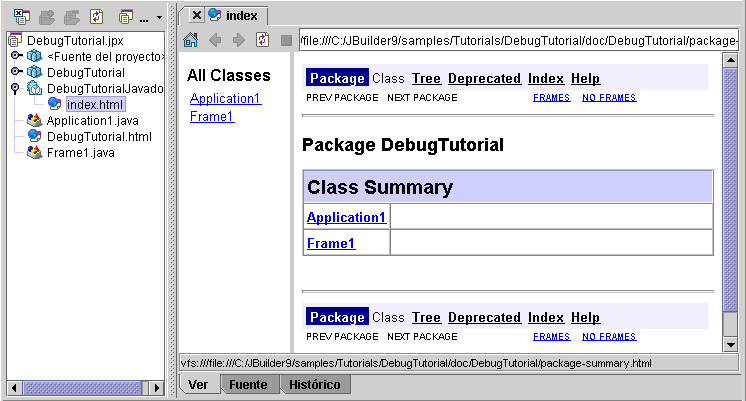

Las funciones de Javadoc varían según la versión de JBuilder
Javadoc es una herramienta creada por Sun Microsystems para generar documentación de la API en archivos con formato HTML. La documentación en HTML se crea a partir de los comentarios introducidos en los archivos de código fuente de la API.
JBuilder incorpora varias funciones para la creación de Javadoc. El asistente crea un nodo de documentación con propiedades para la ejecución del Javadoc. Este nodo aparece en el panel del proyecto. El Javadoc se puede crear cada vez que se compila un proyecto, utilizando las propiedades actuales.
JBuilder también incluye las siguientes funciones relacionadas con Javadoc:
@todo al código 
Si desea más información, consulte:
Generación de aplicaciones con JBuilder Creación de Javadoc a partir de archivos fuente de la API